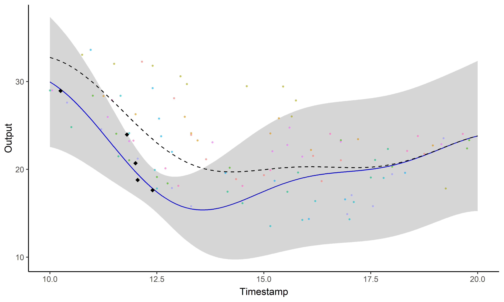
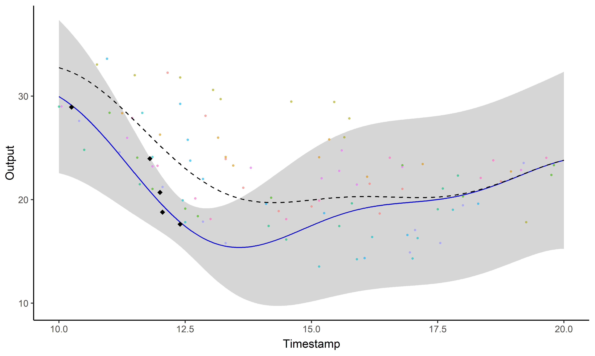
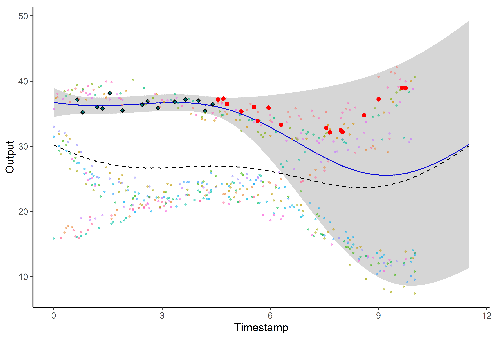
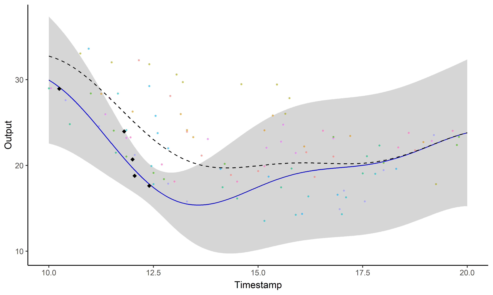
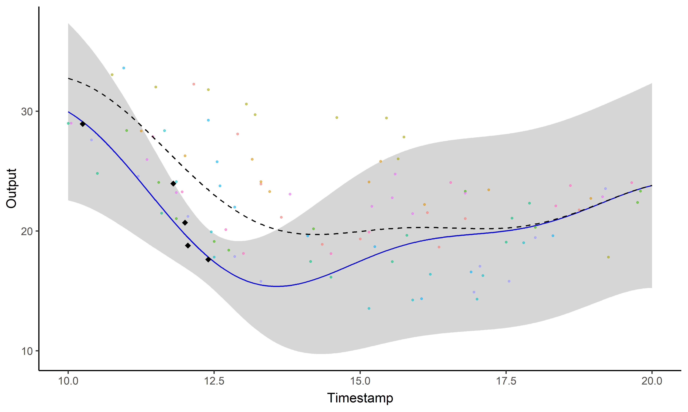

Interview for the position:
Research Associate in Machine Learning for Longitudinal Population Studies
Arthur Leroy
University of Sheffield - 10/05/2021
Background
-
2009-2012: BSc in pure mathematics at the University of La Rochelle,
Background
-
2009-2012: BSc in pure mathematics at the University of La Rochelle,
-
2012-2014: MSc in mathematics, major in statistics, at the University of Rennes I,
Background
-
2009-2012: BSc in pure mathematics at the University of La Rochelle,
-
2012-2014: MSc in mathematics, major in statistics, at the University of Rennes I,
-
2014-2014: Research internship at National Institute for Research in Computer Science and Automation (Inria), in Paris,
-
2016-2017: Research engineer at the National Institute of Sports, Expertise and Performance (INSEP), in Paris.
2017-2020: PhD at the University of Paris
-
Proposed a research project focusing on developing machine learning algorithms for helping with talent identification using longitudinal data of performance,
-
Won 2 grants (a PhD grant and a research funding for the lab) from research and sports ministries for this project,
-
Collaborations with the French Swimming Federation and French Athletics Federation.

Multi-Task GP with Common Mean
A. Leroy, P. Latouche, B. Guedj, S. Gey - MAGMA: Inference and Prediction using Multi-Task Gaussian Processes with Common Mean - Under submission in Machine Learning
 

Clustering and Prediction with a mixture of Multi-Task GPs
A. Leroy, P. Latouche, B. Guedj, S. Gey - Cluster-Specific Predictions with Multi-Task Gaussian Processes - Under submission in JMLR

Current work and perspectives
Current projects:
-
2020- : Teaching and Research Fellow at the University of Paris,
-
Implementation of a comprehensive R package (with the associate paper) and a Python library for our Multi-Task GPs framework (supervision of an MSc intern),
-
Extensions of the framework: sparse approximations and multi-dimensional inputs,
-
Theoretical work across PAC-Bayes theory and Gaussian Processes.
Interests for the future:
-
Widen my comprehension of the GP literature, in particular on sparse approximations, online learning and kernel choice,
-
Explore and develop my skills on the specificities of high-dimensional data,
-
Explore theoretical properties of GPs, like generalisation bounds or the links with NNs,
-
Developing accessible tools for practitionners using probabilistic modelling and discover new areas of applications.
In a nutshell
Applicative contributions:
-
A. Leroy et al. - Cluster-Specific Predictions with Multi-Task Gaussian Processes - 2018
-
I. Moussa, A. Leroy et al. - REDI: adaptive and robust method for computing […] - 2019
-
R. Pla, A. Leroy et al. - Bayesian approach to quantify morphological impact […] - 2019
Methodological contributions:
-
A. Leroy et al. - MAGMA: Inference and Prediction using Multi-Task Gaussian […] - 2020
-
A. Leroy et al. - Cluster-Specific Predictions with Multi-Task Gaussian Processes - 2020
Algorithmic contributions:
Scientific community:
-
Involvement in the French Statistical Society (Young statisticians, Statistics & Sports),
-
Reviewer for Journal of the Royal Statistical Society (SC), PeerJ, Journal of Sport Science.

 
